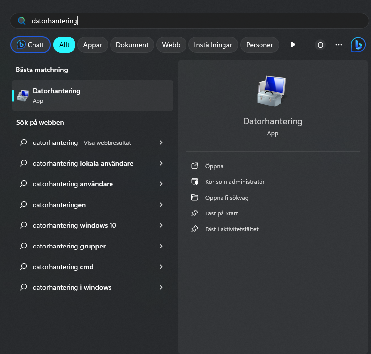
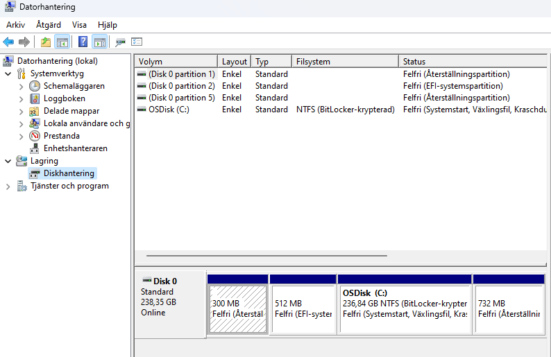
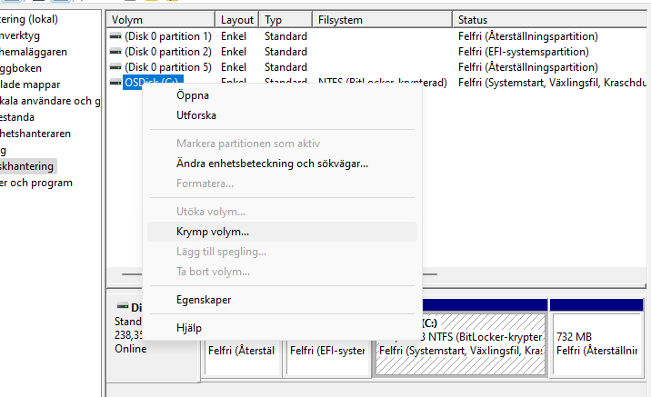

Så du har datorn framför dig, det ända som behövs nu är Opertiv Systemet ( OS )
och lite config för att få den att köra som önskat.
Denna Guiden ska gå igenom
- Hur man installerar Windows 11 Pro OS
- Hur man formaterar sitt förvarings utrymme på datorn
OS Installation
Vi börjar med att installera Windows
- Sätt in Bootable USB med Windows 11 Pro i datorn
-
Starta Datorn och öppna BIOS, vanligt viss med
F1, F2, F10, F12, Del, eller Esc
under startup
Detta kommer att öppna BIOS
- Navigera till Menyn som heter
Boot
-
Vi letar efter något som heter
Boot Order
Ändra så att USB:et med OS på står högst upp iprioreties : 1 eller 0
så att datorn bootar från USB:et
-
Om det finns så kan du även ändra OS-Typ i BIOS

- Starta om Datorn och följ installations Manualen
Nu Borde Windows 11 Pro vara installerat på datorn
För att Skydda din dator från eventuella virus eller farliga appar på USB:er så borde du
öppna BIOS igen när Installationen är klar
och ändra tillbaka
Boot Order
till hårddisken som prioritet 1
så att BIOS inte startar USB minnen först
Hard Drive Configuering
Då är det dags att ändra på disk configurationen
-
Börja med att trycka på Windows knappen och sök efter
Datorhantering
 -
Navigera till
Diskhantering
underLagring
 -
Högerklicka
på din disk och tryck påkrymp
om det inte redan finns ledigt utrymme  -
När du krymt utrymmet så kan du högerklicka på det tomma utrymmet längst ned ( Markerat med Svart )

-
Högerklicka på det svarta utrymmet och välja
Ny volym

- Följ Guiden för ny volym och och ändra dem inställningarna som passar dig bäst